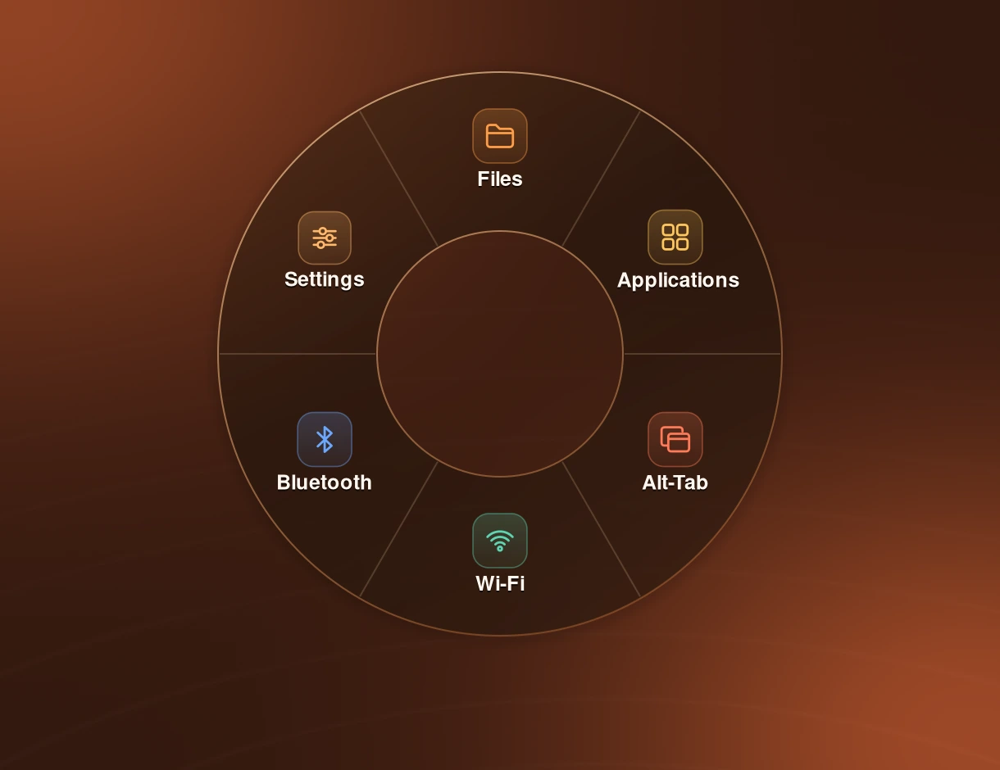

What if it was a circle?
An innovative all-in-one radial launcher for quickly navigating between apps, folders, and windows. Perfect if you want a smooth, modern dmenu for your WM.
For Linux and Windows (planned) Built in Rust

How it works
Six tools within reach.
- Files
- Return to frequently opened folders or type a path to browse.
- Applications
- Find installed apps. The ones you launch most rise to the top.
- Alt-Tab
- Search open windows across workspaces by title or app ID.
- Wi-Fi
- Join nearby networks, rescan, or manage saved profiles.
- Bluetooth
- Discover, pair, and manage devices from the ring.
- Settings
- Change appearance, colors, keybinds, and the main menu from the app.
- Or create your own!
- Build a custom menu for your own commands with a JSON file. Docs
A menu that fits.
Up to eight results stay in a ring. Larger menus unfold into a four-column grid. As you type and narrow the results, the icons move back into place.
Smooth animations and fast response time are a priority.
No matching apps.
Sample applications
Setup
Get ReCircles.
Clone the repository with the commands shown here, or choose Code then Download ZIP on GitHub. If you download the ZIP, extract it and run the last two commands from the extracted folder. After installing, bind recircles to a shortcut in your compositor.
git clone https://github.com/RekoSK/ReCircles.git
cd ReCircles
cargo install --locked --path .
recirclesSystem requirements
- A Wayland compositor with layer-shell support. Alt-Tab also needs the foreign-toplevel protocol.
- Rust 1.89 or later, Cargo, pkg-config, and development files for GTK 3, gtk-layer-shell 0.6 or later, and libwayland-client.
- On Arch Linux, the native dependencies are
gtk3,gtk-layer-shell,wayland, andpkgconf. - Wi-Fi uses NetworkManager (
nmcli). Bluetooth uses BlueZ (bluetoothctl).
Customize your ring
Open Settings from the main ring or run recircles --run settings. Edit the appearance, pick colors, capture keybinds, or reorder and rename menu items. Changes take effect immediately and save to ~/.config/recircles/recircles.json by default.
Add JSON menus for your own commands and open them with recircles --run <name>.